Hra, kterou si dítě samo řekne
Bradavická škola vznikla v rodině, kde se každý večer čte Harry Potter a osmiletá čtenářka chtěla do Bradavic. Tak dostala dopis se sovou, Moudrý klobouk ji zařadil do koleje a místo pracovních listů teď chodí na vyučování.
Hra procvičuje přesně to, co se děti učí ve škole. Vychází ze zkušeností tvůrců předních vzdělávacích aplikací, třeba Duolinga, upravených pro osmileté dítě: bez tlaku, bez reklam a bez honby za časem u obrazovky.
Jeden den v Bradavicích
Každý den jedno krátké vyučování. Za správné odpovědi dítě dostává galeony, plamínek ve Velké síni roste a na Příčné ulici si za ně koupí mazlíčka nebo věci do ložnice.
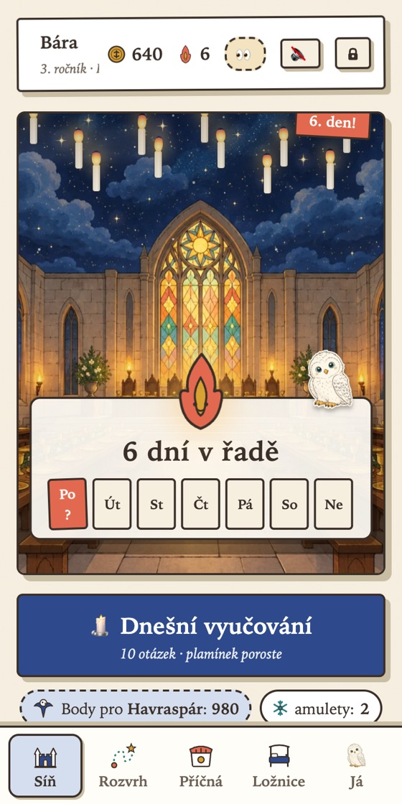
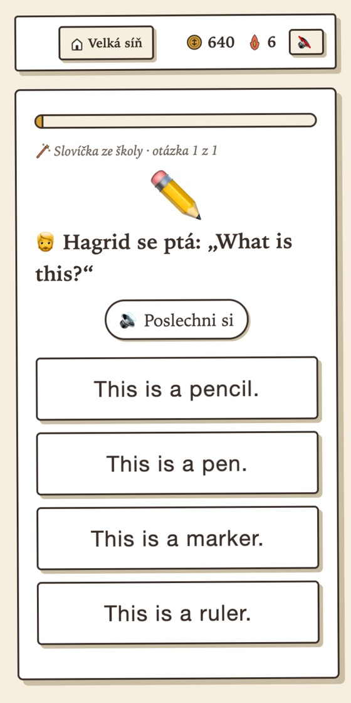
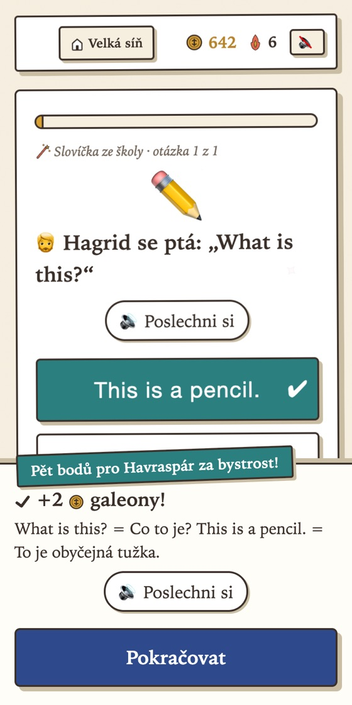
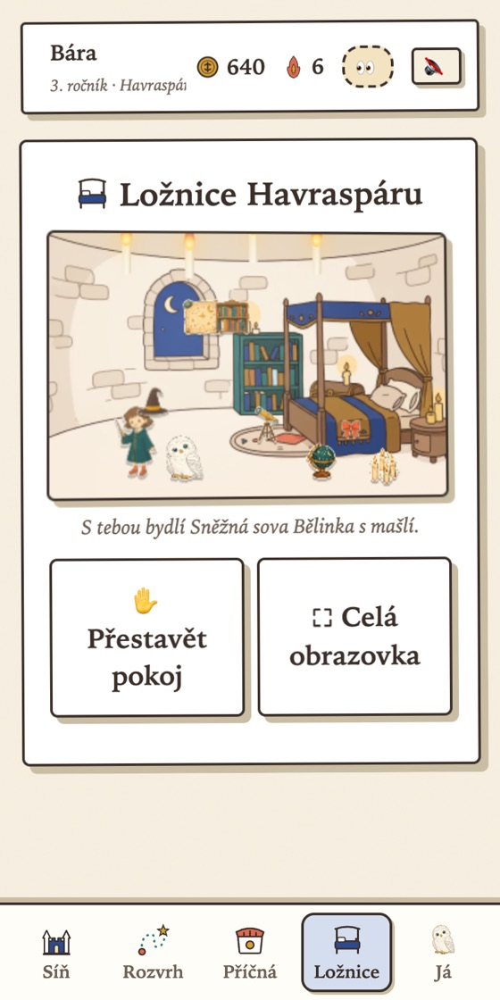
Kouzla, za kterými je věda
Každý z těchto principů jsme převzali od produktů, které učí miliony lidí, a ověřili, že dává smysl pro osmileté dítě.
Tipnout se nedá
Slovíčko dítě „umí“, až ho bez nabídky napíše z hlavy, a to ve dva různé dny. Výběr ze čtyř možností je jen první krok. Slovníček ukazuje poctivě, co opravdu umí a co jen poznává.
Vybavování z paměti a opakování v rozestupech, nejsilnější známé postupy pro zapamatování.Plamínek, který se nevyplatí zlevňovat
Plamínek roste jen za dokončené denní vyučování. Dva ledové amulety ochrání vynechaný den a o ztracený plamínek se dá „zabojovat“ dvěma hodinami. Žádné další úlevy, aby měl cenu.
Podle zkušeností Duolinga: nejvíc pomáhá prvních sedm dní a plamínek se nesmí zlevnit.Chyby nic nestojí
Žádné životy, žádná časomíra, žádné ztracené body. Špatná odpověď jen přinese jednu větu vysvětlení a otázka se později vrátí. Profesoři chválí a povzbuzují.
Duolingo zkoušel omezený počet pokusů a přineslo to nulový efekt. Pro dítě by byl tlak navíc škodlivý.Nejdřív slyšet, pak odpovídat
Anglická slova a věty hra vysloví britskou výslovností a možnosti ukáže až po poslechu. Hagrid se ptá „What is this?“ a dítě odpovídá celou větou. Procvičuje se pravopis, poslech i porozumění.
Angličtina cílí na to, co dětem dělá největší potíže: jak se slova píšou.Čtení s rodičem, bez spoilerů
Otázky z knih jsou jen z kapitol, které už spolu dočtete. Rodič posune dočtenou kapitolu a hra otevře nové otázky. Ročník ve hře odpovídá dílu knihy.
Hra navazuje na společné čtení, nenahrazuje ho.Postavy, které mluví
Brumbál, profesorka McGonagallová a Hagrid uvádějí hodiny vlastními hlasy a chválí za sérii správných odpovědí. Sova provede hrou a nosí otázky. Učení má tvář a příběh.
Hra je v kouzelném světě, který dítě miluje, ne „gamifikovaný“ test.Hvězdy a mapa hradu
Každá učebna má hvězdy mistrovství. Na mapě hradu je vidět, co je hotové a co čeká. Zkouška ročníku na konci prověří vše, i opakovaně a bez stresu.
Denní smyčka, dlouhodobé cíle a profil, na který je dítě pyšné.Poctivé galeony
Galeony se dají utratit jen za kosmetiku ve hře, nikdy za skutečné peníze. Hodina, která se nedokončí, se nepočítá. Za obchod se nevydělává čas u obrazovky.
Odměna je symbol, motivace má zůstat v učení samotném.Co se procvičuje
Podle osnov 3. třídy. Učebny se otevírají postupně, rodič je odemyká podle toho, co se zrovna probírá ve škole.
🧪 Lektvary
matematika
- sčítání a odčítání do 100 a do 1000
- násobilka a dělení
- zaokrouhlování, dělení se zbytkem
- jednotky a slovní úlohy
- počítání z hlavy za bonus
🪶 Psaní brkem
čeština
- tvrdé a měkké slabiky
- abeceda
- párové souhlásky
- vyjmenovaná slova
- slovní druhy, věty a souvětí
✨ Kouzelné formule
angličtina
- slovíčka ze školy podle lekcí, zadává rodič
- pravopis: skládání, doplňování, psaní
- poslech a rozhovory
- slovníček Nové → Poznávám → Umím
📜 Dějiny čar a kouzel
čtení s porozuměním
- otázky z dočtených kapitol
- vysvětlení po každé odpovědi
- každý díl knihy má svou učebnu
Víte, co jde a co ne
- Přehled za 7 dní: kdy se učilo, kolik otázek napoprvé a kde byly chyby.
- Seznam chyb s filtrem podle předmětu. Dá se zkopírovat a probrat spolu.
- Slovíčka ze školy: zadáte je řádek po řádku, třeba „pen - pero“, a hra je naučí.
- Rodinná odměna: domluvíte cíl (výlet, hračka) a dítě na něj šetří galeony.
- Odemykání učeben podle toho, co se právě probírá ve škole.
- Panel je zamčený dvouciferným násobením, které osmileté dítě zatím nevyřeší.
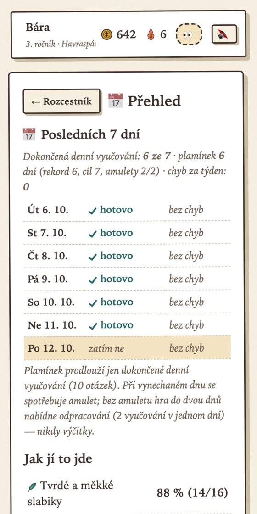
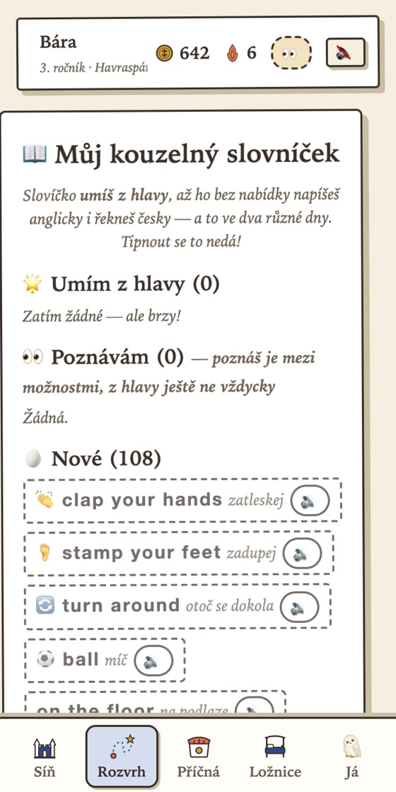
Víte, co se právě učí, i když nejste vedle
- Právě teď: „Právě se učí: Násobilka 2–5, otázka 7 z 10“. Obnovuje se samo každých pár sekund.
- Dnes a týden: kolik hodin a otázek zvládlo napoprvé, které dny se učilo a jak hoří plamínek.
- Kde chybuje: konkrétní příklady z posledního týdne, ať víte, co spolu procvičit.
- Násobilka po příkladech: mřížka ukáže, které příklady už umí, které „jdou“ a na které ještě nedošlo. Stejně tak vyjmenovaná slova a slovíčka.
- Soví pošta: pošlete z telefonu pochvalu a pár galeonů. Dopis dítěti přistane ve Velké síni a ono odpoví.
- Vlastní ikona na ploše a přístup pro celou rodinu, třeba i pro babičku: pozvete ji jejím e-mailem, heslo není potřeba.
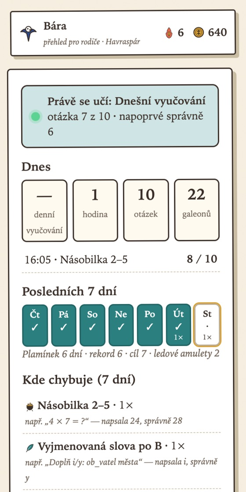
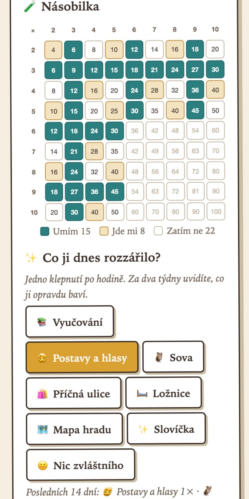
Tablet, telefon i počítač
- Bez instalace: stačí otevřít v prohlížeči. Na tabletu se dá přidat na plochu jako aplikace a aktualizuje se sama.
- Jeden postup na všech zařízeních: rodič se přihlásí e-mailem (bez hesla, přijde mu kód) a tablet dítěte připojí šesti číslicemi z obrazovky.
- Funguje i bez internetu: postup se ukládá v zařízení a srovná se, až bude připojení.
- Mapa hradu a ložnice se dají natáčet a přiblížit přes celou obrazovku.
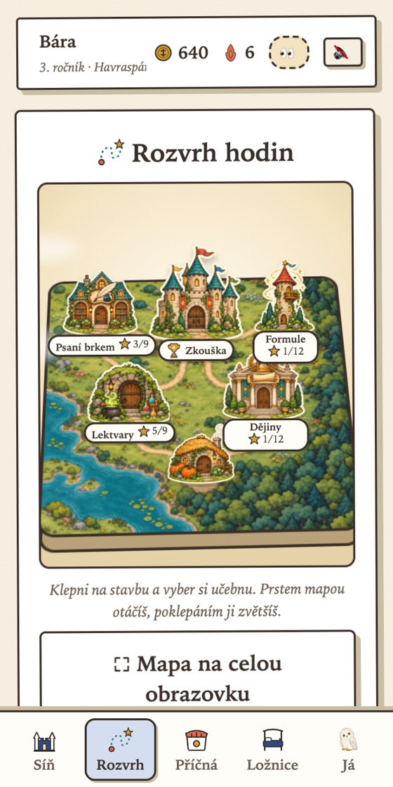
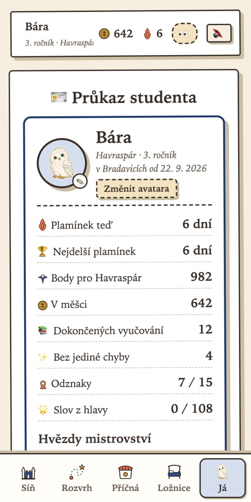
Časté otázky
Kolik to stojí?
Nic. Hra je zdarma, bez reklam a bez nákupů za skutečné peníze. Galeony se získávají jen učením.
Musím zakládat účet?
Ne. Dítě může hrát hned a postup se ukládá přímo v zařízení. Kdo chce hrát na více zařízeních nebo sledovat živý přehled v telefonu, přihlásí se v rodičovském panelu svým e-mailem: přijde mu e-mail s tlačítkem a 6 číslicemi, heslo není potřeba. Ukládáme jen e-mail rodiče a postup ve hře, nic o dítěti mimo hru. Další rodiče pozvete e-mailem, tablet dítěte připojíte šesti číslicemi.
Pro jaký věk je hra?
Pro děti kolem 7 až 9 let, učivo odpovídá 3. třídě české školy. Rodič odemyká učebny postupně, takže se dá začít i dřív nebo pokračovat později.
Musí dítě znát Harryho Pottera?
Nemusí, ale nejvíc si to užijí děti, které knihy čtou nebo jim je někdo čte. Otázky z knih se otevírají jen ke kapitolám, které už máte přečtené, takže hra nic neprozradí dopředu.
Kolik času u obrazovky to zabere?
Jedno denní vyučování má 10 otázek, obvykle 5 až 10 minut. Plamínek roste jen za to jedno vyučování denně, takže hra nevede k nekonečnému hraní.
Co když dítě udělá chybu?
Nic se nestane. Žádné body se neztrácejí, hra krátce vysvětlí správnou odpověď a otázka se později vrátí. Profesoři povzbuzují.
Jak si to vyzkoušet?
Klepněte na „Vyzkoušet bez registrace“. Spustí se ukázka se studentkou, která už má hotový postup, a sova vás hrou provede. Nic se neuloží. Vlastní profil založíte jedním klepnutím na úvodní obrazovce.
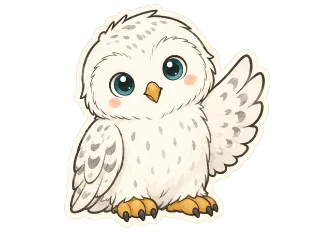
Dopis z Bradavic už je na cestě
Vyzkoušejte si hru za dvě minuty, bez registrace.